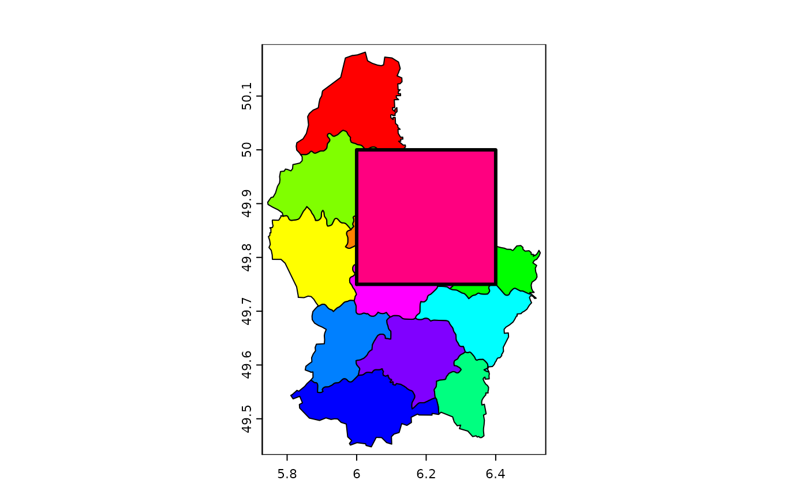
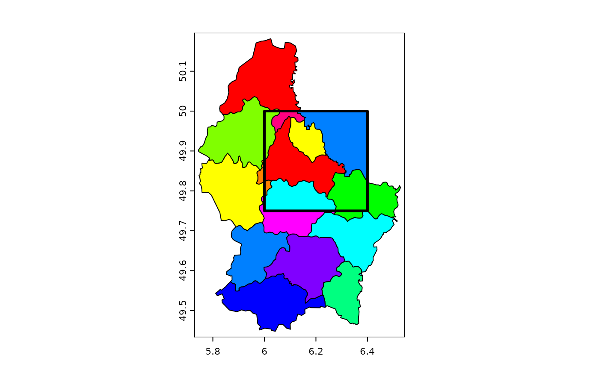

Replace values with values from another object
cover.RdReplace missing (NA) or other values in SpatRaster x with the values of SpatRaster y. Or replace missing values in the first layer with the first value encountered in other layers.
For polygons: areas of x that overlap with y are replaced by y or, if identity=TRUE intersected with y.
Usage
# S4 method for class 'SpatRaster,SpatRaster'
cover(x, y, values=NA, filename="", ...)
# S4 method for class 'SpatRaster,missing'
cover(x, y, values=NA, filename="", ...)
# S4 method for class 'SpatVector,SpatVector'
cover(x, y, identity=FALSE, expand=TRUE)Arguments
- x
SpatRaster or SpatVector
- y
Same as
xor missing ifxis a SpatRaster- values
numeric. The cell values in
xto be replaced by the values iny- filename
character. Output filename
- ...
additional arguments for writing files as in
writeRaster- identity
logical. If
TRUEoverlapping areas are intersected rather than replaced- expand
logical. Should parts of
ythat are outside ofxbe included?
Examples
r1 <- r2 <- rast(ncols=36, nrows=18)
values(r1) <- 1:ncell(r1)
values(r2) <- runif(ncell(r2))
r2 <- classify(r2, cbind(-Inf, 0.5, NA))
r3 <- cover(r2, r1)
p <- vect(system.file("ex/lux.shp", package="terra"))
e <- as.polygons(ext(6, 6.4, 49.75, 50))
values(e) <- data.frame(y=10)
cv <- cover(p, e)
plot(cv, col=rainbow(12))
ci <- cover(p, e, identity=TRUE)
lines(e, lwd=3)

plot(ci, col=rainbow(12))
lines(e, lwd=3)
